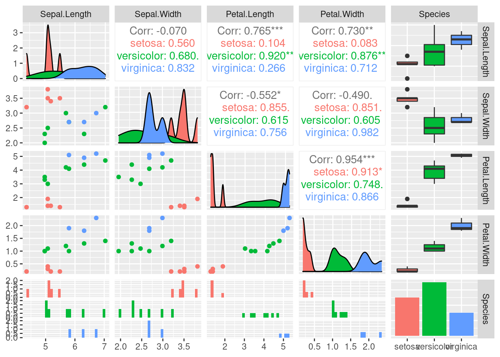
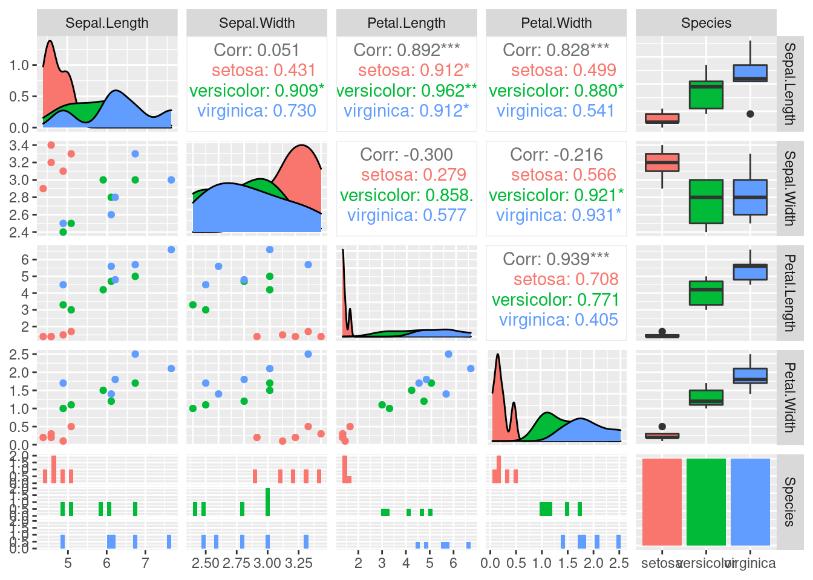
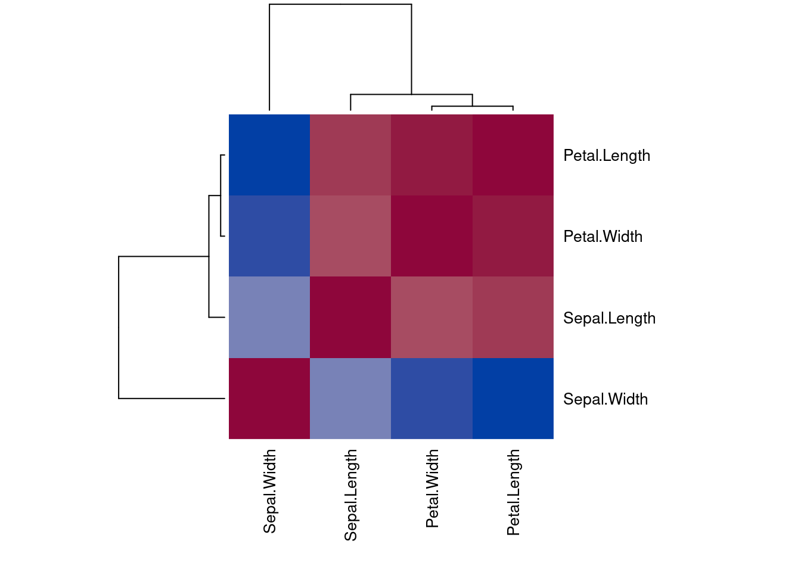

Chapter 2 Data
Packages used for this chapter: arules (Hahsler et al. 2021), caret (Kuhn 2021), factoextra (Kassambara and Mundt 2020), GGally (Schloerke et al. 2021), plotly (Sievert et al. 2021), proxy (Meyer and Buchta 2021), sampling (Tillé and Matei 2021), seriation (Hahsler, Buchta, and Hornik 2021), tidyverse (Wickham 2021c)
2.1 The Iris Dataset
We will use a toy dataset that comes with R. Fisher’s iris data set gives the measurements in centimeters of the variables sepal length and width and petal length and width, respectively, for 50 flowers from each of 3 species of iris. The species are Iris setosa, versicolor, and virginica.
For more details see: ? iris
Load the iris data set and convert the data.frame into a tibble. Note: datasets that come with R or R packages can be loaded with data().
library(tidyverse)
data(iris)
iris <- as_tibble(iris)
iris## # A tibble: 150 x 5
## Sepal.Length Sepal.Width Petal.Length Petal.Width
## <dbl> <dbl> <dbl> <dbl>
## 1 5.1 3.5 1.4 0.2
## 2 4.9 3 1.4 0.2
## 3 4.7 3.2 1.3 0.2
## 4 4.6 3.1 1.5 0.2
## 5 5 3.6 1.4 0.2
## 6 5.4 3.9 1.7 0.4
## 7 4.6 3.4 1.4 0.3
## 8 5 3.4 1.5 0.2
## 9 4.4 2.9 1.4 0.2
## 10 4.9 3.1 1.5 0.1
## # … with 140 more rows, and 1 more variable:
## # Species <fct>2.2 Data Quality
Inspect data (produce a scatterplot matrix using ggpairs from package GGally). Possibly
you can see noise and ouliers.
library(GGally)## Registered S3 method overwritten by 'GGally':
## method from
## +.gg ggplot2ggpairs(iris, aes(color = Species))## `stat_bin()` using `bins = 30`. Pick better value
## with `binwidth`.## `stat_bin()` using `bins = 30`. Pick better value
## with `binwidth`.
## `stat_bin()` using `bins = 30`. Pick better value
## with `binwidth`.
## `stat_bin()` using `bins = 30`. Pick better value
## with `binwidth`.
Get summary statistics for each column (outliers, missing values)
summary(iris)## Sepal.Length Sepal.Width Petal.Length
## Min. :4.30 Min. :2.00 Min. :1.00
## 1st Qu.:5.10 1st Qu.:2.80 1st Qu.:1.60
## Median :5.80 Median :3.00 Median :4.35
## Mean :5.84 Mean :3.06 Mean :3.76
## 3rd Qu.:6.40 3rd Qu.:3.30 3rd Qu.:5.10
## Max. :7.90 Max. :4.40 Max. :6.90
## Petal.Width Species
## Min. :0.1 setosa :50
## 1st Qu.:0.3 versicolor:50
## Median :1.3 virginica :50
## Mean :1.2
## 3rd Qu.:1.8
## Max. :2.5just the mean
iris %>% summarize_if(is.numeric, mean)## # A tibble: 1 x 4
## Sepal.Length Sepal.Width Petal.Length Petal.Width
## <dbl> <dbl> <dbl> <dbl>
## 1 5.84 3.06 3.76 1.20Often you will do something like:
clean.data <- iris %>% drop_na() %>% unique()
summary(clean.data)## Sepal.Length Sepal.Width Petal.Length
## Min. :4.30 Min. :2.00 Min. :1.00
## 1st Qu.:5.10 1st Qu.:2.80 1st Qu.:1.60
## Median :5.80 Median :3.00 Median :4.30
## Mean :5.84 Mean :3.06 Mean :3.75
## 3rd Qu.:6.40 3rd Qu.:3.30 3rd Qu.:5.10
## Max. :7.90 Max. :4.40 Max. :6.90
## Petal.Width Species
## Min. :0.10 setosa :50
## 1st Qu.:0.30 versicolor:50
## Median :1.30 virginica :49
## Mean :1.19
## 3rd Qu.:1.80
## Max. :2.50Note that one case (non-unique) is gone. All cases with missing values will also have been dropped.
2.3 Aggregation
Aggregate by species. First group the data and then summarize each group.
iris %>% group_by(Species) %>% summarize_all(mean)## # A tibble: 3 x 5
## Species Sepal.Length Sepal.Width Petal.Length
## <fct> <dbl> <dbl> <dbl>
## 1 setosa 5.01 3.43 1.46
## 2 versicolor 5.94 2.77 4.26
## 3 virginica 6.59 2.97 5.55
## # … with 1 more variable: Petal.Width <dbl>iris %>% group_by(Species) %>% summarize_all(median)## # A tibble: 3 x 5
## Species Sepal.Length Sepal.Width Petal.Length
## <fct> <dbl> <dbl> <dbl>
## 1 setosa 5 3.4 1.5
## 2 versicolor 5.9 2.8 4.35
## 3 virginica 6.5 3 5.55
## # … with 1 more variable: Petal.Width <dbl>2.4 Sampling
2.4.1 Random Sampling
Sample from a vector with replacement.
sample(c("A", "B", "C"), size = 10, replace = TRUE)## [1] "C" "B" "A" "A" "B" "A" "C" "C" "A" "A"Sampling rows from a tibble (I set the random number generator seed to make the results reproducible).
set.seed(1000)
s <- iris %>% sample_n(15)
ggpairs(s, aes(color = Species))## `stat_bin()` using `bins = 30`. Pick better value
## with `binwidth`.
## `stat_bin()` using `bins = 30`. Pick better value
## with `binwidth`.
## `stat_bin()` using `bins = 30`. Pick better value
## with `binwidth`.
## `stat_bin()` using `bins = 30`. Pick better value
## with `binwidth`.
2.4.2 Stratified Sampling
Stratified sampling is a method of sampling from a population which can be partitioned into subpopulations, while controlling the proportions of the subpopulation in the resulting sample.
In the following, the subpopulations are the different types of species and we want to make sure to sample the same number (5) flowers from each.
You need to install the package sampling with: install.packages(“sampling”)
library(sampling)
id2 <- strata(iris, stratanames="Species", size=c(5,5,5), method="srswor")
id2## Species ID_unit Prob Stratum
## 7 setosa 7 0.1 1
## 9 setosa 9 0.1 1
## 10 setosa 10 0.1 1
## 24 setosa 24 0.1 1
## 48 setosa 48 0.1 1
## 58 versicolor 58 0.1 2
## 62 versicolor 62 0.1 2
## 74 versicolor 74 0.1 2
## 78 versicolor 78 0.1 2
## 99 versicolor 99 0.1 2
## 106 virginica 106 0.1 3
## 107 virginica 107 0.1 3
## 127 virginica 127 0.1 3
## 135 virginica 135 0.1 3
## 145 virginica 145 0.1 3s2 <- iris %>% slice(id2$ID_unit)
ggpairs(s2, aes(color = Species))## `stat_bin()` using `bins = 30`. Pick better value
## with `binwidth`.
## `stat_bin()` using `bins = 30`. Pick better value
## with `binwidth`.
## `stat_bin()` using `bins = 30`. Pick better value
## with `binwidth`.
## `stat_bin()` using `bins = 30`. Pick better value
## with `binwidth`.
2.5 Features
2.5.1 Dimensionality Reduction
2.5.1.1 Principal Components Analysis (PCA)
PCA calculates principal components (a new orthonormal basis vectors in the data space) from data points such that the first principal component explains the most variability in the data, the second the next most and so on. In data analysis, PCA is used to project high-dimensional data points onto the first few (typically two) principal components for visualization as a scatter plot and as preprocessing for modeling (e.g., before k-means clustering). Points that are closer together in the high-dimensional space, tend also be closer together in the lower-dimensional space,
Look at the 3d data using an interactive 3d plot (needs package plotly). However, 3d plots are hard to print out and the iris data is actually in 4 dimensions.
##library(plotly) # I don't load the package because it's namespace clashes with select in dplyr.
plotly::plot_ly(iris, x = ~Sepal.Length, y = ~Petal.Length, z = ~Sepal.Width,
size = ~Petal.Width, color = ~Species, type="scatter3d")## No scatter3d mode specifed:
## Setting the mode to markers
## Read more about this attribute -> https://plotly.com/r/reference/#scatter-mode## Warning: `line.width` does not currently support
## multiple values.
## Warning: `line.width` does not currently support
## multiple values.
## Warning: `line.width` does not currently support
## multiple values.Calculate the principal components using prcomp()
pc <- iris %>% select(-Species) %>% as.matrix() %>% prcomp()
summary(pc)## Importance of components:
## PC1 PC2 PC3 PC4
## Standard deviation 2.056 0.4926 0.2797 0.15439
## Proportion of Variance 0.925 0.0531 0.0171 0.00521
## Cumulative Proportion 0.925 0.9777 0.9948 1.00000How important is each principal component can also be seen using a scree plot. The plot shows how much variability in the data is explained by each additional principal component.
plot(pc, type = "line")
Note: For the iris data, the first principal component (PC1) explains most of the variability in the data.
Inspect the raw object (display structure)
str(pc)## List of 5
## $ sdev : num [1:4] 2.056 0.493 0.28 0.154
## $ rotation: num [1:4, 1:4] 0.3614 -0.0845 0.8567 0.3583 -0.6566 ...
## ..- attr(*, "dimnames")=List of 2
## .. ..$ : chr [1:4] "Sepal.Length" "Sepal.Width" "Petal.Length" "Petal.Width"
## .. ..$ : chr [1:4] "PC1" "PC2" "PC3" "PC4"
## $ center : Named num [1:4] 5.84 3.06 3.76 1.2
## ..- attr(*, "names")= chr [1:4] "Sepal.Length" "Sepal.Width" "Petal.Length" "Petal.Width"
## $ scale : logi FALSE
## $ x : num [1:150, 1:4] -2.68 -2.71 -2.89 -2.75 -2.73 ...
## ..- attr(*, "dimnames")=List of 2
## .. ..$ : NULL
## .. ..$ : chr [1:4] "PC1" "PC2" "PC3" "PC4"
## - attr(*, "class")= chr "prcomp"We can display the data points projected on the first two principal components.
ggplot(as_tibble(pc$x), aes(x = PC1, y = PC2, color = iris$Species)) + geom_point()
Since the first principal component represents most of the variability, we can also project the data only on PC1.
ggplot(as_tibble(pc$x), aes(x = PC1, y = 0, color = iris$Species)) + geom_point()
Plot the projected data and add the original axes as arrows. This is called a biplot. If old and new axes point roughly in the same direction, then they are correlated (linearly dependent).
library(factoextra)## Welcome! Want to learn more? See two factoextra-related books at https://goo.gl/ve3WBafviz_pca(pc)
fviz_pca_var(pc)
Another popular method to project data in lower dimensions for visualization is t-distributed stochastic neighbor embedding (t-SNE) available in package Rtsne.
2.5.1.2 Multi-Dimensional Scaling (MDS)
MDS is similar to PCA. Instead of data points, it takes pairwise distances (i.e., a distance matrix) and produces a space where points are placed to represent these distances as well as possible. The axis in this space are called components and are similar to the principal components in PCA. Let’s calculate distances in the 4-d space of iris.
d <- iris %>% select(-Species) %>% dist()and do metric (classic) MDS to reconstruct a 2-d space.
fit <- cmdscale(d, k = 2)
colnames(fit) <- c("comp1", "comp2")
fit <- as_tibble(fit)
ggplot(fit, aes(x = comp1, y = comp2, color = iris$Species)) + geom_point()
2.5.1.3 Non-Parametric Multidimensional Scaling
Non-parametric multidimensional scaling performs MDS while relaxing the need of linear relationships. Methods are available in package MASS as functions
isoMDS and sammon.
2.5.2 Feature Selection
We will talk about feature selection when we discuss classification models.
2.5.3 Discretize Features
ggplot(iris, aes(x = Petal.Width, y = 1:150)) + geom_point()
A histogram is a better visualization for the distribution of a single variable.
ggplot(iris, aes(Petal.Width)) + geom_histogram()## `stat_bin()` using `bins = 30`. Pick better value
## with `binwidth`.
Equal interval width
iris %>% pull(Sepal.Width) %>% cut(breaks=3)## [1] (2.8,3.6] (2.8,3.6] (2.8,3.6] (2.8,3.6] (2.8,3.6]
## [6] (3.6,4.4] (2.8,3.6] (2.8,3.6] (2.8,3.6] (2.8,3.6]
## [11] (3.6,4.4] (2.8,3.6] (2.8,3.6] (2.8,3.6] (3.6,4.4]
## [16] (3.6,4.4] (3.6,4.4] (2.8,3.6] (3.6,4.4] (3.6,4.4]
## [21] (2.8,3.6] (3.6,4.4] (2.8,3.6] (2.8,3.6] (2.8,3.6]
## [26] (2.8,3.6] (2.8,3.6] (2.8,3.6] (2.8,3.6] (2.8,3.6]
## [31] (2.8,3.6] (2.8,3.6] (3.6,4.4] (3.6,4.4] (2.8,3.6]
## [36] (2.8,3.6] (2.8,3.6] (2.8,3.6] (2.8,3.6] (2.8,3.6]
## [41] (2.8,3.6] (2,2.8] (2.8,3.6] (2.8,3.6] (3.6,4.4]
## [46] (2.8,3.6] (3.6,4.4] (2.8,3.6] (3.6,4.4] (2.8,3.6]
## [51] (2.8,3.6] (2.8,3.6] (2.8,3.6] (2,2.8] (2,2.8]
## [56] (2,2.8] (2.8,3.6] (2,2.8] (2.8,3.6] (2,2.8]
## [61] (2,2.8] (2.8,3.6] (2,2.8] (2.8,3.6] (2.8,3.6]
## [66] (2.8,3.6] (2.8,3.6] (2,2.8] (2,2.8] (2,2.8]
## [71] (2.8,3.6] (2,2.8] (2,2.8] (2,2.8] (2.8,3.6]
## [76] (2.8,3.6] (2,2.8] (2.8,3.6] (2.8,3.6] (2,2.8]
## [81] (2,2.8] (2,2.8] (2,2.8] (2,2.8] (2.8,3.6]
## [86] (2.8,3.6] (2.8,3.6] (2,2.8] (2.8,3.6] (2,2.8]
## [91] (2,2.8] (2.8,3.6] (2,2.8] (2,2.8] (2,2.8]
## [96] (2.8,3.6] (2.8,3.6] (2.8,3.6] (2,2.8] (2,2.8]
## [101] (2.8,3.6] (2,2.8] (2.8,3.6] (2.8,3.6] (2.8,3.6]
## [106] (2.8,3.6] (2,2.8] (2.8,3.6] (2,2.8] (2.8,3.6]
## [111] (2.8,3.6] (2,2.8] (2.8,3.6] (2,2.8] (2,2.8]
## [116] (2.8,3.6] (2.8,3.6] (3.6,4.4] (2,2.8] (2,2.8]
## [121] (2.8,3.6] (2,2.8] (2,2.8] (2,2.8] (2.8,3.6]
## [126] (2.8,3.6] (2,2.8] (2.8,3.6] (2,2.8] (2.8,3.6]
## [131] (2,2.8] (3.6,4.4] (2,2.8] (2,2.8] (2,2.8]
## [136] (2.8,3.6] (2.8,3.6] (2.8,3.6] (2.8,3.6] (2.8,3.6]
## [141] (2.8,3.6] (2.8,3.6] (2,2.8] (2.8,3.6] (2.8,3.6]
## [146] (2.8,3.6] (2,2.8] (2.8,3.6] (2.8,3.6] (2.8,3.6]
## Levels: (2,2.8] (2.8,3.6] (3.6,4.4]Other methods (equal frequency, k-means clustering, etc.)
library(arules)## Loading required package: Matrix##
## Attaching package: 'Matrix'## The following objects are masked from 'package:tidyr':
##
## expand, pack, unpack##
## Attaching package: 'arules'## The following object is masked from 'package:dplyr':
##
## recode## The following objects are masked from 'package:base':
##
## abbreviate, writeiris %>% pull(Petal.Width) %>% discretize(method = "interval", breaks = 3)## [1] [0.1,0.9) [0.1,0.9) [0.1,0.9) [0.1,0.9) [0.1,0.9)
## [6] [0.1,0.9) [0.1,0.9) [0.1,0.9) [0.1,0.9) [0.1,0.9)
## [11] [0.1,0.9) [0.1,0.9) [0.1,0.9) [0.1,0.9) [0.1,0.9)
## [16] [0.1,0.9) [0.1,0.9) [0.1,0.9) [0.1,0.9) [0.1,0.9)
## [21] [0.1,0.9) [0.1,0.9) [0.1,0.9) [0.1,0.9) [0.1,0.9)
## [26] [0.1,0.9) [0.1,0.9) [0.1,0.9) [0.1,0.9) [0.1,0.9)
## [31] [0.1,0.9) [0.1,0.9) [0.1,0.9) [0.1,0.9) [0.1,0.9)
## [36] [0.1,0.9) [0.1,0.9) [0.1,0.9) [0.1,0.9) [0.1,0.9)
## [41] [0.1,0.9) [0.1,0.9) [0.1,0.9) [0.1,0.9) [0.1,0.9)
## [46] [0.1,0.9) [0.1,0.9) [0.1,0.9) [0.1,0.9) [0.1,0.9)
## [51] [0.9,1.7) [0.9,1.7) [0.9,1.7) [0.9,1.7) [0.9,1.7)
## [56] [0.9,1.7) [0.9,1.7) [0.9,1.7) [0.9,1.7) [0.9,1.7)
## [61] [0.9,1.7) [0.9,1.7) [0.9,1.7) [0.9,1.7) [0.9,1.7)
## [66] [0.9,1.7) [0.9,1.7) [0.9,1.7) [0.9,1.7) [0.9,1.7)
## [71] [1.7,2.5] [0.9,1.7) [0.9,1.7) [0.9,1.7) [0.9,1.7)
## [76] [0.9,1.7) [0.9,1.7) [1.7,2.5] [0.9,1.7) [0.9,1.7)
## [81] [0.9,1.7) [0.9,1.7) [0.9,1.7) [0.9,1.7) [0.9,1.7)
## [86] [0.9,1.7) [0.9,1.7) [0.9,1.7) [0.9,1.7) [0.9,1.7)
## [91] [0.9,1.7) [0.9,1.7) [0.9,1.7) [0.9,1.7) [0.9,1.7)
## [96] [0.9,1.7) [0.9,1.7) [0.9,1.7) [0.9,1.7) [0.9,1.7)
## [101] [1.7,2.5] [1.7,2.5] [1.7,2.5] [1.7,2.5] [1.7,2.5]
## [106] [1.7,2.5] [1.7,2.5] [1.7,2.5] [1.7,2.5] [1.7,2.5]
## [111] [1.7,2.5] [1.7,2.5] [1.7,2.5] [1.7,2.5] [1.7,2.5]
## [116] [1.7,2.5] [1.7,2.5] [1.7,2.5] [1.7,2.5] [0.9,1.7)
## [121] [1.7,2.5] [1.7,2.5] [1.7,2.5] [1.7,2.5] [1.7,2.5]
## [126] [1.7,2.5] [1.7,2.5] [1.7,2.5] [1.7,2.5] [0.9,1.7)
## [131] [1.7,2.5] [1.7,2.5] [1.7,2.5] [0.9,1.7) [0.9,1.7)
## [136] [1.7,2.5] [1.7,2.5] [1.7,2.5] [1.7,2.5] [1.7,2.5]
## [141] [1.7,2.5] [1.7,2.5] [1.7,2.5] [1.7,2.5] [1.7,2.5]
## [146] [1.7,2.5] [1.7,2.5] [1.7,2.5] [1.7,2.5] [1.7,2.5]
## attr(,"discretized:breaks")
## [1] 0.1 0.9 1.7 2.5
## attr(,"discretized:method")
## [1] interval
## Levels: [0.1,0.9) [0.9,1.7) [1.7,2.5]iris %>% pull(Petal.Width) %>% discretize(method = "frequency", breaks = 3)## [1] [0.1,0.867) [0.1,0.867) [0.1,0.867) [0.1,0.867)
## [5] [0.1,0.867) [0.1,0.867) [0.1,0.867) [0.1,0.867)
## [9] [0.1,0.867) [0.1,0.867) [0.1,0.867) [0.1,0.867)
## [13] [0.1,0.867) [0.1,0.867) [0.1,0.867) [0.1,0.867)
## [17] [0.1,0.867) [0.1,0.867) [0.1,0.867) [0.1,0.867)
## [21] [0.1,0.867) [0.1,0.867) [0.1,0.867) [0.1,0.867)
## [25] [0.1,0.867) [0.1,0.867) [0.1,0.867) [0.1,0.867)
## [29] [0.1,0.867) [0.1,0.867) [0.1,0.867) [0.1,0.867)
## [33] [0.1,0.867) [0.1,0.867) [0.1,0.867) [0.1,0.867)
## [37] [0.1,0.867) [0.1,0.867) [0.1,0.867) [0.1,0.867)
## [41] [0.1,0.867) [0.1,0.867) [0.1,0.867) [0.1,0.867)
## [45] [0.1,0.867) [0.1,0.867) [0.1,0.867) [0.1,0.867)
## [49] [0.1,0.867) [0.1,0.867) [0.867,1.6) [0.867,1.6)
## [53] [0.867,1.6) [0.867,1.6) [0.867,1.6) [0.867,1.6)
## [57] [1.6,2.5] [0.867,1.6) [0.867,1.6) [0.867,1.6)
## [61] [0.867,1.6) [0.867,1.6) [0.867,1.6) [0.867,1.6)
## [65] [0.867,1.6) [0.867,1.6) [0.867,1.6) [0.867,1.6)
## [69] [0.867,1.6) [0.867,1.6) [1.6,2.5] [0.867,1.6)
## [73] [0.867,1.6) [0.867,1.6) [0.867,1.6) [0.867,1.6)
## [77] [0.867,1.6) [1.6,2.5] [0.867,1.6) [0.867,1.6)
## [81] [0.867,1.6) [0.867,1.6) [0.867,1.6) [1.6,2.5]
## [85] [0.867,1.6) [1.6,2.5] [0.867,1.6) [0.867,1.6)
## [89] [0.867,1.6) [0.867,1.6) [0.867,1.6) [0.867,1.6)
## [93] [0.867,1.6) [0.867,1.6) [0.867,1.6) [0.867,1.6)
## [97] [0.867,1.6) [0.867,1.6) [0.867,1.6) [0.867,1.6)
## [101] [1.6,2.5] [1.6,2.5] [1.6,2.5] [1.6,2.5]
## [105] [1.6,2.5] [1.6,2.5] [1.6,2.5] [1.6,2.5]
## [109] [1.6,2.5] [1.6,2.5] [1.6,2.5] [1.6,2.5]
## [113] [1.6,2.5] [1.6,2.5] [1.6,2.5] [1.6,2.5]
## [117] [1.6,2.5] [1.6,2.5] [1.6,2.5] [0.867,1.6)
## [121] [1.6,2.5] [1.6,2.5] [1.6,2.5] [1.6,2.5]
## [125] [1.6,2.5] [1.6,2.5] [1.6,2.5] [1.6,2.5]
## [129] [1.6,2.5] [1.6,2.5] [1.6,2.5] [1.6,2.5]
## [133] [1.6,2.5] [0.867,1.6) [0.867,1.6) [1.6,2.5]
## [137] [1.6,2.5] [1.6,2.5] [1.6,2.5] [1.6,2.5]
## [141] [1.6,2.5] [1.6,2.5] [1.6,2.5] [1.6,2.5]
## [145] [1.6,2.5] [1.6,2.5] [1.6,2.5] [1.6,2.5]
## [149] [1.6,2.5] [1.6,2.5]
## attr(,"discretized:breaks")
## [1] 0.1000 0.8667 1.6000 2.5000
## attr(,"discretized:method")
## [1] frequency
## Levels: [0.1,0.867) [0.867,1.6) [1.6,2.5]iris %>% pull(Petal.Width) %>% discretize(method = "cluster", breaks = 3)## [1] [0.1,0.792) [0.1,0.792) [0.1,0.792)
## [4] [0.1,0.792) [0.1,0.792) [0.1,0.792)
## [7] [0.1,0.792) [0.1,0.792) [0.1,0.792)
## [10] [0.1,0.792) [0.1,0.792) [0.1,0.792)
## [13] [0.1,0.792) [0.1,0.792) [0.1,0.792)
## [16] [0.1,0.792) [0.1,0.792) [0.1,0.792)
## [19] [0.1,0.792) [0.1,0.792) [0.1,0.792)
## [22] [0.1,0.792) [0.1,0.792) [0.1,0.792)
## [25] [0.1,0.792) [0.1,0.792) [0.1,0.792)
## [28] [0.1,0.792) [0.1,0.792) [0.1,0.792)
## [31] [0.1,0.792) [0.1,0.792) [0.1,0.792)
## [34] [0.1,0.792) [0.1,0.792) [0.1,0.792)
## [37] [0.1,0.792) [0.1,0.792) [0.1,0.792)
## [40] [0.1,0.792) [0.1,0.792) [0.1,0.792)
## [43] [0.1,0.792) [0.1,0.792) [0.1,0.792)
## [46] [0.1,0.792) [0.1,0.792) [0.1,0.792)
## [49] [0.1,0.792) [0.1,0.792) [0.792,1.71)
## [52] [0.792,1.71) [0.792,1.71) [0.792,1.71)
## [55] [0.792,1.71) [0.792,1.71) [0.792,1.71)
## [58] [0.792,1.71) [0.792,1.71) [0.792,1.71)
## [61] [0.792,1.71) [0.792,1.71) [0.792,1.71)
## [64] [0.792,1.71) [0.792,1.71) [0.792,1.71)
## [67] [0.792,1.71) [0.792,1.71) [0.792,1.71)
## [70] [0.792,1.71) [1.71,2.5] [0.792,1.71)
## [73] [0.792,1.71) [0.792,1.71) [0.792,1.71)
## [76] [0.792,1.71) [0.792,1.71) [0.792,1.71)
## [79] [0.792,1.71) [0.792,1.71) [0.792,1.71)
## [82] [0.792,1.71) [0.792,1.71) [0.792,1.71)
## [85] [0.792,1.71) [0.792,1.71) [0.792,1.71)
## [88] [0.792,1.71) [0.792,1.71) [0.792,1.71)
## [91] [0.792,1.71) [0.792,1.71) [0.792,1.71)
## [94] [0.792,1.71) [0.792,1.71) [0.792,1.71)
## [97] [0.792,1.71) [0.792,1.71) [0.792,1.71)
## [100] [0.792,1.71) [1.71,2.5] [1.71,2.5]
## [103] [1.71,2.5] [1.71,2.5] [1.71,2.5]
## [106] [1.71,2.5] [0.792,1.71) [1.71,2.5]
## [109] [1.71,2.5] [1.71,2.5] [1.71,2.5]
## [112] [1.71,2.5] [1.71,2.5] [1.71,2.5]
## [115] [1.71,2.5] [1.71,2.5] [1.71,2.5]
## [118] [1.71,2.5] [1.71,2.5] [0.792,1.71)
## [121] [1.71,2.5] [1.71,2.5] [1.71,2.5]
## [124] [1.71,2.5] [1.71,2.5] [1.71,2.5]
## [127] [1.71,2.5] [1.71,2.5] [1.71,2.5]
## [130] [0.792,1.71) [1.71,2.5] [1.71,2.5]
## [133] [1.71,2.5] [0.792,1.71) [0.792,1.71)
## [136] [1.71,2.5] [1.71,2.5] [1.71,2.5]
## [139] [1.71,2.5] [1.71,2.5] [1.71,2.5]
## [142] [1.71,2.5] [1.71,2.5] [1.71,2.5]
## [145] [1.71,2.5] [1.71,2.5] [1.71,2.5]
## [148] [1.71,2.5] [1.71,2.5] [1.71,2.5]
## attr(,"discretized:breaks")
## [1] 0.1000 0.7915 1.7055 2.5000
## attr(,"discretized:method")
## [1] cluster
## Levels: [0.1,0.792) [0.792,1.71) [1.71,2.5]ggplot(iris, aes(Petal.Width)) + geom_histogram() +
geom_vline(xintercept =
iris %>% pull(Petal.Width) %>% discretize(method = "interval", breaks = 3, onlycuts = TRUE),
color = "blue") +
labs(title = "Discretization: interval", subtitle = "Blue lines are boundaries")## `stat_bin()` using `bins = 30`. Pick better value
## with `binwidth`.
ggplot(iris, aes(Petal.Width)) + geom_histogram() +
geom_vline(xintercept =
iris %>% pull(Petal.Width) %>% discretize(method = "frequency", breaks = 3, onlycuts = TRUE),
color = "blue") +
labs(title = "Discretization: frequency", subtitle = "Blue lines are boundaries")## `stat_bin()` using `bins = 30`. Pick better value
## with `binwidth`.
ggplot(iris, aes(Petal.Width)) + geom_histogram() +
geom_vline(xintercept =
iris %>% pull(Petal.Width) %>% discretize(method = "cluster", breaks = 3, onlycuts = TRUE),
color = "blue") +
labs(title = "Discretization: cluster", subtitle = "Blue lines are boundaries")## `stat_bin()` using `bins = 30`. Pick better value
## with `binwidth`.
2.5.4 Standardize Data (Z-Scores)
Standardize the scale of features to make them comparable. For each column the mean is subtracted (centering) and it is divided by the standard deviation (scaling). Now most values should be in [-3,3].
Note: tidyverse currently does not have a simple scale function, so I make one that provides a wrapper for the standard scale function in R:
scale_numeric <- function(x) x %>% mutate_if(is.numeric, function(y) as.vector(scale(y)))
iris.scaled <- iris %>% scale_numeric()
iris.scaled## # A tibble: 150 x 5
## Sepal.Length Sepal.Width Petal.Length Petal.Width
## <dbl> <dbl> <dbl> <dbl>
## 1 -0.898 1.02 -1.34 -1.31
## 2 -1.14 -0.132 -1.34 -1.31
## 3 -1.38 0.327 -1.39 -1.31
## 4 -1.50 0.0979 -1.28 -1.31
## 5 -1.02 1.25 -1.34 -1.31
## 6 -0.535 1.93 -1.17 -1.05
## 7 -1.50 0.786 -1.34 -1.18
## 8 -1.02 0.786 -1.28 -1.31
## 9 -1.74 -0.361 -1.34 -1.31
## 10 -1.14 0.0979 -1.28 -1.44
## # … with 140 more rows, and 1 more variable:
## # Species <fct>summary(iris.scaled)## Sepal.Length Sepal.Width Petal.Length
## Min. :-1.8638 Min. :-2.426 Min. :-1.562
## 1st Qu.:-0.8977 1st Qu.:-0.590 1st Qu.:-1.222
## Median :-0.0523 Median :-0.132 Median : 0.335
## Mean : 0.0000 Mean : 0.000 Mean : 0.000
## 3rd Qu.: 0.6722 3rd Qu.: 0.557 3rd Qu.: 0.760
## Max. : 2.4837 Max. : 3.080 Max. : 1.780
## Petal.Width Species
## Min. :-1.442 setosa :50
## 1st Qu.:-1.180 versicolor:50
## Median : 0.132 virginica :50
## Mean : 0.000
## 3rd Qu.: 0.788
## Max. : 1.7062.6 Proximities: Similarities and Distances
Note: R actually only uses dissimilarities/distances.
2.6.1 Minkowsky Distances
The Minkowsky distance is a family of metric distances including Euclidean and Manhattan distance.
iris_sample <- iris.scaled %>% select(-Species) %>% slice(1:5)
iris_sample## # A tibble: 5 x 4
## Sepal.Length Sepal.Width Petal.Length Petal.Width
## <dbl> <dbl> <dbl> <dbl>
## 1 -0.898 1.02 -1.34 -1.31
## 2 -1.14 -0.132 -1.34 -1.31
## 3 -1.38 0.327 -1.39 -1.31
## 4 -1.50 0.0979 -1.28 -1.31
## 5 -1.02 1.25 -1.34 -1.31Calculate distances matrices between the first 5 flowers (use only the 4 numeric columns).
iris_sample %>% dist(method="euclidean")## 1 2 3 4
## 2 1.1723
## 3 0.8428 0.5216
## 4 1.1000 0.4326 0.2829
## 5 0.2593 1.3819 0.9883 1.2460iris_sample %>% dist(method="manhattan")## 1 2 3 4
## 2 1.3887
## 3 1.2280 0.7570
## 4 1.5782 0.6484 0.4635
## 5 0.3502 1.4973 1.3367 1.6868iris_sample %>% dist(method="maximum")## 1 2 3 4
## 2 1.1471
## 3 0.6883 0.4589
## 4 0.9177 0.3623 0.2294
## 5 0.2294 1.3766 0.9177 1.1471Note: Don’t forget to scale the data if the ranges are very different!
2.6.2 Distances for Binary Data
b <- rbind(
c(0,0,0,1,1,1,1,0,0,1),
c(0,0,1,1,1,0,0,1,0,0)
)
b## [,1] [,2] [,3] [,4] [,5] [,6] [,7] [,8] [,9]
## [1,] 0 0 0 1 1 1 1 0 0
## [2,] 0 0 1 1 1 0 0 1 0
## [,10]
## [1,] 1
## [2,] 02.6.2.1 Jaccard Index
Jaccard index is a similarity measure so R reports 1-Jaccard
b %>% dist(method = "binary")## 1
## 2 0.71432.6.2.2 Hamming Distance
Hamming distance is the number of mis-matches (equivalent to Manhattan distance on 0-1 data and also the squared Euclidean distance).
b %>% dist(method = "manhattan")## 1
## 2 5b %>% dist(method = "euclidean") %>% "^"(2)## 1
## 2 5Note: "^"(2) calculates the square.
2.6.3 Distances for Mixed Data
2.6.3.1 Gower’s Distance
Works with mixed data
data <- tibble(
height= c( 160, 185, 170),
weight= c( 52, 90, 75),
sex= c( "female", "male", "male")
)
data## # A tibble: 3 x 3
## height weight sex
## <dbl> <dbl> <chr>
## 1 160 52 female
## 2 185 90 male
## 3 170 75 maleNote: Nominal variables need to be factors!
data <- data %>% mutate_if(is.character, factor)
data## # A tibble: 3 x 3
## height weight sex
## <dbl> <dbl> <fct>
## 1 160 52 female
## 2 185 90 male
## 3 170 75 malelibrary(proxy)##
## Attaching package: 'proxy'## The following object is masked from 'package:Matrix':
##
## as.matrix## The following objects are masked from 'package:stats':
##
## as.dist, dist## The following object is masked from 'package:base':
##
## as.matrixd_Gower <- data %>% dist(method="Gower")
d_Gower## 1 2
## 2 1.0000
## 3 0.6684 0.3316Note: Gower’s distance automatically scales, so no need to scale the data first.
2.6.3.2 Using Euclidean Distance with Mixed Data
Sometimes methods (e.g., k-means) only can use Euclidean distance. In this case, nominal features can be converted into 0-1 dummy variables. Euclidean distance on these will result in a usable distance measure.
Create dummy variables
library(caret)## Loading required package: lattice##
## Attaching package: 'caret'## The following object is masked from 'package:sampling':
##
## cluster## The following object is masked from 'package:purrr':
##
## liftdata_dummy <- dummyVars(~., data) %>% predict(data)
data_dummy## height weight sex.female sex.male
## 1 160 52 1 0
## 2 185 90 0 1
## 3 170 75 0 1Since sex has now two columns, we need to weight them by 1/2 after scaling.
weight <- matrix(c(1,1,1/2,1/2), ncol = 4, nrow = nrow(data_dummy), byrow = TRUE)
data_dummy_scaled <- scale(data_dummy) * weight
d_dummy <- data_dummy_scaled %>% dist()
d_dummy## 1 2
## 2 3.064
## 3 1.891 1.427Distance is (mostly) consistent with Gower’s distance (other than that Gower’s distance is scaled between 0 and 1).
ggplot(tibble(d_dummy, d_Gower), aes(x = d_dummy, y = d_Gower)) +
geom_point() +
geom_smooth(method = "lm", se = FALSE)## Don't know how to automatically pick scale for object of type dist. Defaulting to continuous.
## Don't know how to automatically pick scale for object of type dist. Defaulting to continuous.## `geom_smooth()` using formula 'y ~ x'
2.6.4 Additional proximity Measures Available in Package proxy
library(proxy)
pr_DB$get_entries() %>% names()## [1] "Jaccard" "Kulczynski1"
## [3] "Kulczynski2" "Mountford"
## [5] "Fager" "Russel"
## [7] "simple matching" "Hamman"
## [9] "Faith" "Tanimoto"
## [11] "Dice" "Phi"
## [13] "Stiles" "Michael"
## [15] "Mozley" "Yule"
## [17] "Yule2" "Ochiai"
## [19] "Simpson" "Braun-Blanquet"
## [21] "cosine" "eJaccard"
## [23] "eDice" "correlation"
## [25] "Chi-squared" "Phi-squared"
## [27] "Tschuprow" "Cramer"
## [29] "Pearson" "Gower"
## [31] "Euclidean" "Mahalanobis"
## [33] "Bhjattacharyya" "Manhattan"
## [35] "supremum" "Minkowski"
## [37] "Canberra" "Wave"
## [39] "divergence" "Kullback"
## [41] "Bray" "Soergel"
## [43] "Levenshtein" "Podani"
## [45] "Chord" "Geodesic"
## [47] "Whittaker" "Hellinger"
## [49] "fJaccard"2.7 Relationships Between Features
2.7.1 Correlation
Correlation can be used for ratio/interval scaled features. We typically think of the Pearson correlation coefficient between features (columns).
cc <- iris %>% select(-Species) %>% cor()
ggplot(iris, aes(Petal.Length, Petal.Width)) + geom_point() +
geom_smooth(method = "lm")## `geom_smooth()` using formula 'y ~ x'
with(iris, cor(Petal.Length, Petal.Width))## [1] 0.9629Note: with is the same as cor(iris$Petal.Length, iris$Petal.Width)
with(iris, cor.test(Petal.Length, Petal.Width))##
## Pearson's product-moment correlation
##
## data: Petal.Length and Petal.Width
## t = 43, df = 148, p-value <2e-16
## alternative hypothesis: true correlation is not equal to 0
## 95 percent confidence interval:
## 0.9491 0.9730
## sample estimates:
## cor
## 0.9629ggplot(iris, aes(Sepal.Length, Sepal.Width)) + geom_point() +
geom_smooth(method = "lm")## `geom_smooth()` using formula 'y ~ x'
with(iris, cor(Sepal.Length, Sepal.Width))## [1] -0.1176with(iris, cor.test(Sepal.Length, Sepal.Width))##
## Pearson's product-moment correlation
##
## data: Sepal.Length and Sepal.Width
## t = -1.4, df = 148, p-value = 0.2
## alternative hypothesis: true correlation is not equal to 0
## 95 percent confidence interval:
## -0.27269 0.04351
## sample estimates:
## cor
## -0.11762.7.2 Rank Correlation
Rank correlation is used for ordinal features.
To show this, we first convert the continuous features in Iris into
ordered factors with three levels using the function cut.
iris_ord <- iris %>% mutate_if(is.numeric,
function(x) cut(x, 3, labels = c("short", "medium", "long"), ordered = TRUE))
iris_ord## # A tibble: 150 x 5
## Sepal.Length Sepal.Width Petal.Length Petal.Width
## <ord> <ord> <ord> <ord>
## 1 short medium short short
## 2 short medium short short
## 3 short medium short short
## 4 short medium short short
## 5 short medium short short
## 6 short long short short
## 7 short medium short short
## 8 short medium short short
## 9 short medium short short
## 10 short medium short short
## # … with 140 more rows, and 1 more variable:
## # Species <fct>summary(iris_ord)## Sepal.Length Sepal.Width Petal.Length Petal.Width
## short :59 short :47 short :50 short :50
## medium:71 medium:88 medium:54 medium:54
## long :20 long :15 long :46 long :46
## Species
## setosa :50
## versicolor:50
## virginica :50iris_ord %>% pull(Sepal.Length)## [1] short short short short short short short
## [8] short short short short short short short
## [15] medium medium short short medium short short
## [22] short short short short short short short
## [29] short short short short short short short
## [36] short short short short short short short
## [43] short short short short short short short
## [50] short long medium long short medium medium
## [57] medium short medium short short medium medium
## [64] medium medium medium medium medium medium medium
## [71] medium medium medium medium medium medium long
## [78] medium medium medium short short medium medium
## [85] short medium medium medium medium short short
## [92] medium medium short medium medium medium medium
## [99] short medium medium medium long medium medium
## [106] long short long medium long medium medium
## [113] long medium medium medium medium long long
## [120] medium long medium long medium medium long
## [127] medium medium medium long long long medium
## [134] medium medium long medium medium medium long
## [141] medium long medium long medium medium medium
## [148] medium medium medium
## Levels: short < medium < longKendall’s tau rank correlation coefficient
iris_ord %>% select(-Species) %>% sapply(xtfrm) %>% cor(method="kendall")## Sepal.Length Sepal.Width Petal.Length
## Sepal.Length 1.0000 -0.1438 0.7419
## Sepal.Width -0.1438 1.0000 -0.3299
## Petal.Length 0.7419 -0.3299 1.0000
## Petal.Width 0.7295 -0.3154 0.9198
## Petal.Width
## Sepal.Length 0.7295
## Sepal.Width -0.3154
## Petal.Length 0.9198
## Petal.Width 1.0000Spearman’s rho
iris_ord %>% select(-Species) %>% sapply(xtfrm) %>% cor(method="spearman")## Sepal.Length Sepal.Width Petal.Length
## Sepal.Length 1.0000 -0.1570 0.7938
## Sepal.Width -0.1570 1.0000 -0.3663
## Petal.Length 0.7938 -0.3663 1.0000
## Petal.Width 0.7843 -0.3517 0.9399
## Petal.Width
## Sepal.Length 0.7843
## Sepal.Width -0.3517
## Petal.Length 0.9399
## Petal.Width 1.0000Note: unfortunately we have to transform the ordered factors into numbers representing the order with xtfrm first.
Compare to the Pearson correlation on the original data
iris %>% select(-Species) %>% cor()## Sepal.Length Sepal.Width Petal.Length
## Sepal.Length 1.0000 -0.1176 0.8718
## Sepal.Width -0.1176 1.0000 -0.4284
## Petal.Length 0.8718 -0.4284 1.0000
## Petal.Width 0.8179 -0.3661 0.9629
## Petal.Width
## Sepal.Length 0.8179
## Sepal.Width -0.3661
## Petal.Length 0.9629
## Petal.Width 1.00002.7.3 Relationship Between Nominal and Ordinal Features
Is sepal length and species related? Use cross tabulation
tbl <- iris_ord %>% select(Sepal.Length, Species) %>% table()
tbl## Species
## Sepal.Length setosa versicolor virginica
## short 47 11 1
## medium 3 36 32
## long 0 3 17Doing this with tidyverse is a little more involved and uses pivot operations and grouping.
iris_ord %>%
select(Species, Sepal.Length) %>%
pivot_longer(cols = Sepal.Length) %>%
group_by(Species, value) %>% count() %>% ungroup() %>%
pivot_wider(names_from = Species, values_from = n)## # A tibble: 3 x 4
## value setosa versicolor virginica
## <ord> <int> <int> <int>
## 1 short 47 11 1
## 2 medium 3 36 32
## 3 long NA 3 17Test of Independence: Pearson’s chi-squared test is performed with the null hypothesis that the joint distribution of the cell counts in a 2-dimensional contingency table is the product of the row and column marginals. (h0 is independence)
tbl %>% chisq.test()##
## Pearson's Chi-squared test
##
## data: .
## X-squared = 112, df = 4, p-value <2e-16Using xtabs instead
x <- xtabs(~Sepal.Length + Species, data = iris_ord)
x## Species
## Sepal.Length setosa versicolor virginica
## short 47 11 1
## medium 3 36 32
## long 0 3 17summary(x)## Call: xtabs(formula = ~Sepal.Length + Species, data = iris_ord)
## Number of cases in table: 150
## Number of factors: 2
## Test for independence of all factors:
## Chisq = 112, df = 4, p-value = 3e-23Group-wise averages
iris %>% group_by(Species) %>% summarize_at(vars(Sepal.Length), mean)## # A tibble: 3 x 2
## Species Sepal.Length
## <fct> <dbl>
## 1 setosa 5.01
## 2 versicolor 5.94
## 3 virginica 6.59iris %>% group_by(Species) %>% summarize_all(mean)## # A tibble: 3 x 5
## Species Sepal.Length Sepal.Width Petal.Length
## <fct> <dbl> <dbl> <dbl>
## 1 setosa 5.01 3.43 1.46
## 2 versicolor 5.94 2.77 4.26
## 3 virginica 6.59 2.97 5.55
## # … with 1 more variable: Petal.Width <dbl>2.8 Density Estimation
Density estimation constructions an estimate of an unobservable probability density function (a distribution) based on observed data.
Just plotting the data is not very helpful
ggplot(iris, aes(Petal.Length, 1:150)) + geom_point()
Histograms work better
ggplot(iris, aes(Petal.Length)) +
geom_histogram() +
geom_rug(alpha = 1/10)## `stat_bin()` using `bins = 30`. Pick better value
## with `binwidth`.
Kernel density estimate KDE
ggplot(iris, aes(Petal.Length)) +
geom_rug(alpha = 1/10) +
geom_density()
Plot 2d kernel density estimate
ggplot(iris, aes(Sepal.Length, Sepal.Width)) +
geom_jitter() +
geom_density2d()
ggplot(iris, aes(Sepal.Length, Sepal.Width)) +
geom_bin2d(bins = 10) +
geom_jitter(color = "red")
ggplot(iris, aes(Sepal.Length, Sepal.Width)) +
geom_hex(bins = 10) +
geom_jitter(color = "red")## Warning: Computation failed in `stat_binhex()`:
## The `hexbin` package is required for `stat_binhex()`
2.9 Exploring Data
2.9.1 Basic statistics
Load the iris data set.
data(iris)Fisher’s iris data set gives the measurements in centimeters of the variables sepal length and width and petal length and width, respectively, for 50 flowers from each of 3 species of iris. The species are Iris setosa, versicolor, and virginica.
We convert the data.frame into a tidyerse tibble. This is optional, tidyverse can work directly with data.frames.
iris <- as_tibble(iris)
iris## # A tibble: 150 x 5
## Sepal.Length Sepal.Width Petal.Length Petal.Width
## <dbl> <dbl> <dbl> <dbl>
## 1 5.1 3.5 1.4 0.2
## 2 4.9 3 1.4 0.2
## 3 4.7 3.2 1.3 0.2
## 4 4.6 3.1 1.5 0.2
## 5 5 3.6 1.4 0.2
## 6 5.4 3.9 1.7 0.4
## 7 4.6 3.4 1.4 0.3
## 8 5 3.4 1.5 0.2
## 9 4.4 2.9 1.4 0.2
## 10 4.9 3.1 1.5 0.1
## # … with 140 more rows, and 1 more variable:
## # Species <fct>Get summary statistics (using base R)
summary(iris)## Sepal.Length Sepal.Width Petal.Length
## Min. :4.30 Min. :2.00 Min. :1.00
## 1st Qu.:5.10 1st Qu.:2.80 1st Qu.:1.60
## Median :5.80 Median :3.00 Median :4.35
## Mean :5.84 Mean :3.06 Mean :3.76
## 3rd Qu.:6.40 3rd Qu.:3.30 3rd Qu.:5.10
## Max. :7.90 Max. :4.40 Max. :6.90
## Petal.Width Species
## Min. :0.1 setosa :50
## 1st Qu.:0.3 versicolor:50
## Median :1.3 virginica :50
## Mean :1.2
## 3rd Qu.:1.8
## Max. :2.5Get mean and standard deviation for sepal length
iris %>% pull(Sepal.Length) %>% mean()## [1] 5.843iris %>% pull(Sepal.Length) %>% sd()## [1] 0.8281Ignore missing values (Note: this data does not contain any, but this is what you would do)
iris %>% pull(Sepal.Length) %>% mean(na.rm = TRUE)## [1] 5.843Robust mean (trim 10% of observations from each end of the distribution)
iris %>% pull(Sepal.Length) %>% mean(trim = .1)## [1] 5.808Calculate a summary for all numeric columns
iris %>% summarize_if(is.numeric, mean)## # A tibble: 1 x 4
## Sepal.Length Sepal.Width Petal.Length Petal.Width
## <dbl> <dbl> <dbl> <dbl>
## 1 5.84 3.06 3.76 1.20iris %>% summarize_if(is.numeric, sd)## # A tibble: 1 x 4
## Sepal.Length Sepal.Width Petal.Length Petal.Width
## <dbl> <dbl> <dbl> <dbl>
## 1 0.828 0.436 1.77 0.762iris %>% summarize_if(is.numeric, list(min = min, median = median, max = max))## # A tibble: 1 x 12
## Sepal.Length_min Sepal.Width_min Petal.Length_min
## <dbl> <dbl> <dbl>
## 1 4.3 2 1
## # … with 9 more variables: Petal.Width_min <dbl>,
## # Sepal.Length_median <dbl>,
## # Sepal.Width_median <dbl>,
## # Petal.Length_median <dbl>,
## # Petal.Width_median <dbl>, Sepal.Length_max <dbl>,
## # Sepal.Width_max <dbl>, Petal.Length_max <dbl>,
## # Petal.Width_max <dbl>MAD (median absolute deviation)
iris %>% summarize_if(is.numeric, mad)## # A tibble: 1 x 4
## Sepal.Length Sepal.Width Petal.Length Petal.Width
## <dbl> <dbl> <dbl> <dbl>
## 1 1.04 0.445 1.85 1.042.9.2 Tabulate data
Count the different species.
iris %>% count(Species)## # A tibble: 3 x 2
## Species n
## <fct> <int>
## 1 setosa 50
## 2 versicolor 50
## 3 virginica 50Discretize the data first since there are too many values (cut divides the range by breaks, see package discretization for other methods)
iris_discrete <- iris %>% mutate_if(is.numeric,
function(x) cut(x, 3, labels = c("short", "medium", "long"), ordered = TRUE))
iris_discrete## # A tibble: 150 x 5
## Sepal.Length Sepal.Width Petal.Length Petal.Width
## <ord> <ord> <ord> <ord>
## 1 short medium short short
## 2 short medium short short
## 3 short medium short short
## 4 short medium short short
## 5 short medium short short
## 6 short long short short
## 7 short medium short short
## 8 short medium short short
## 9 short medium short short
## 10 short medium short short
## # … with 140 more rows, and 1 more variable:
## # Species <fct>summary(iris_discrete)## Sepal.Length Sepal.Width Petal.Length Petal.Width
## short :59 short :47 short :50 short :50
## medium:71 medium:88 medium:54 medium:54
## long :20 long :15 long :46 long :46
## Species
## setosa :50
## versicolor:50
## virginica :50Create some tables (creating tables is a little harder using tidyverse)
iris_discrete %>% select(Sepal.Length, Sepal.Width) %>% table()## Sepal.Width
## Sepal.Length short medium long
## short 12 37 10
## medium 31 37 3
## long 4 14 2iris_discrete %>% select(Petal.Length, Petal.Width) %>% table()## Petal.Width
## Petal.Length short medium long
## short 50 0 0
## medium 0 48 6
## long 0 6 40iris_discrete %>% select(Petal.Length, Species) %>% table()## Species
## Petal.Length setosa versicolor virginica
## short 50 0 0
## medium 0 48 6
## long 0 2 44Test if the two features are independent given the counts in the contingency table (H0: independence)
p-value: the probability of seeing a more extreme value of the test statistic under the assumption that H0 is correct. Low p-values (typically less than .05 or .01) indicate that H0 should be rejected.
tbl <- iris_discrete %>% select(Sepal.Length, Sepal.Width) %>% table()
tbl## Sepal.Width
## Sepal.Length short medium long
## short 12 37 10
## medium 31 37 3
## long 4 14 2chisq.test(tbl)## Warning in chisq.test(tbl): Chi-squared approximation
## may be incorrect##
## Pearson's Chi-squared test
##
## data: tbl
## X-squared = 13, df = 4, p-value = 0.01Fisher’s exact test is better for small counts (cells with counts <5)
fisher.test(tbl)##
## Fisher's Exact Test for Count Data
##
## data: tbl
## p-value = 0.01
## alternative hypothesis: two.sidedLook at the distribution for a discrete variable
iris_discrete %>% count(Sepal.Length)## # A tibble: 3 x 2
## Sepal.Length n
## <ord> <int>
## 1 short 59
## 2 medium 71
## 3 long 202.9.3 Percentiles (Quantiles)
By default calculates quantiles
iris %>% pull(Petal.Length) %>% quantile()## 0% 25% 50% 75% 100%
## 1.00 1.60 4.35 5.10 6.90Interquartile range
iris %>% summarize(IQR = quantile(Petal.Length, probs = 0.75) - quantile(Petal.Length, probs = 0.25))## # A tibble: 1 x 1
## IQR
## <dbl>
## 1 3.52.10 Visualization
2.10.1 Histogram
Show the distribution of a single numeric variable
ggplot(iris, aes(Petal.Width)) + geom_histogram(bins = 20)
2.10.2 Boxplot
Compare the distribution of a variable between different groups.
ggplot(iris, aes(Species, Sepal.Length)) + geom_boxplot()
Group-wise averages
iris %>% group_by(Species) %>% summarize_if(is.numeric, mean)## # A tibble: 3 x 5
## Species Sepal.Length Sepal.Width Petal.Length
## <fct> <dbl> <dbl> <dbl>
## 1 setosa 5.01 3.43 1.46
## 2 versicolor 5.94 2.77 4.26
## 3 virginica 6.59 2.97 5.55
## # … with 1 more variable: Petal.Width <dbl>To compare the distribution of the four features using a ggplot boxplot, we first have to transform the data into long format (i.e., all feature values are combined into a single column).
library(tidyr)
iris_long <- iris %>% mutate(id = row_number()) %>% pivot_longer(1:4)
ggplot(iris_long, aes(name, value)) + geom_boxplot()
2.10.3 Scatter plot
Show the relationship between two numeric variables
ggplot(iris, aes(x = Petal.Length, y = Petal.Width, color = Species)) + geom_point()
2.10.4 Scatter Plot Matrix
Show the relationship between several numeric variables
library("GGally")
ggpairs(iris, aes(color = Species))## `stat_bin()` using `bins = 30`. Pick better value
## with `binwidth`.
## `stat_bin()` using `bins = 30`. Pick better value
## with `binwidth`.
## `stat_bin()` using `bins = 30`. Pick better value
## with `binwidth`.
## `stat_bin()` using `bins = 30`. Pick better value
## with `binwidth`.
2.10.5 Data Matrix Visualization
We need the long format
iris_long <- iris %>% mutate(id = row_number()) %>% pivot_longer(1:4)
head(iris_long)## # A tibble: 6 x 4
## Species id name value
## <fct> <int> <chr> <dbl>
## 1 setosa 1 Sepal.Length 5.1
## 2 setosa 1 Sepal.Width 3.5
## 3 setosa 1 Petal.Length 1.4
## 4 setosa 1 Petal.Width 0.2
## 5 setosa 2 Sepal.Length 4.9
## 6 setosa 2 Sepal.Width 3ggplot(iris_long,
aes(x = name, y = id, fill = value)) + geom_tile() +
scale_fill_viridis_c()
values smaller than the average are blue and larger ones are red
iris_scaled <- iris %>% select(-Species) %>% scale()
iris_scaled_long <- iris_scaled %>% as_tibble() %>%
mutate(id = row_number()) %>% pivot_longer(cols = 1:4)
ggplot(iris_scaled_long,
aes(x = name, y = id, fill = value)) + geom_tile() +
scale_fill_gradient2()
Reorder
library(seriation)## Registered S3 methods overwritten by 'registry':
## method from
## print.registry_field proxy
## print.registry_entry proxy##
## Attaching package: 'seriation'## The following object is masked from 'package:lattice':
##
## panel.linesiris_scaled_matrix <- as.matrix(iris_scaled)
o <- seriate(iris_scaled_matrix)
iris_ordered <- permute(iris_scaled_matrix, o)
iris_ordered_long <- iris_ordered %>% as_tibble %>%
mutate(id = row_number()) %>% pivot_longer(cols = 1:4)
ggplot(iris_ordered_long,
aes(x = name, y = id, fill = value)) + geom_tile() +
scale_fill_gradient2()
2.10.6 Correlation Matrix
Calculate and visualize the correlation between features
cm1 <- iris %>% select(-Species) %>% as.matrix %>% cor()
cm1## Sepal.Length Sepal.Width Petal.Length
## Sepal.Length 1.0000 -0.1176 0.8718
## Sepal.Width -0.1176 1.0000 -0.4284
## Petal.Length 0.8718 -0.4284 1.0000
## Petal.Width 0.8179 -0.3661 0.9629
## Petal.Width
## Sepal.Length 0.8179
## Sepal.Width -0.3661
## Petal.Length 0.9629
## Petal.Width 1.0000library(ggcorrplot)
ggcorrplot(cm1)
use hmap from package seriation
hmap(cm1, margin = c(7,7), cexRow = 1, cexCol = 1)
Test if correlation is significantly different from 0
cor.test(iris$Sepal.Length, iris$Sepal.Width)##
## Pearson's product-moment correlation
##
## data: iris$Sepal.Length and iris$Sepal.Width
## t = -1.4, df = 148, p-value = 0.2
## alternative hypothesis: true correlation is not equal to 0
## 95 percent confidence interval:
## -0.27269 0.04351
## sample estimates:
## cor
## -0.1176cor.test(iris$Petal.Length, iris$Petal.Width) #this one is significant##
## Pearson's product-moment correlation
##
## data: iris$Petal.Length and iris$Petal.Width
## t = 43, df = 148, p-value <2e-16
## alternative hypothesis: true correlation is not equal to 0
## 95 percent confidence interval:
## 0.9491 0.9730
## sample estimates:
## cor
## 0.9629Correlation between objects
cm2 <- iris %>% select(-Species) %>% as.matrix() %>% t() %>% cor()
ggcorrplot(cm2)
2.10.7 Parallel Coordinates Plot
library(GGally)
ggparcoord(as_tibble(iris), columns = 1:4, groupColumn = 5)
Reorder with placing correlated features next to each other
library(seriation)
o <- seriate(as.dist(1-cor(iris[,1:4])), method="BBURCG")
get_order(o)## Petal.Length Petal.Width Sepal.Length Sepal.Width
## 3 4 1 2ggparcoord(as_tibble(iris), columns = get_order(o), groupColumn = 5)
Look at https://www.r-graph-gallery.com/ for many example graphs.